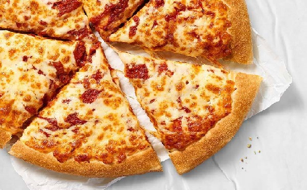

My Favorite Foods
-
Pizza: A delicious dish made of dough, tomato sauce, cheese, and toppings such as pepperoni, mushrooms, and olives.
-
Sushi: A Japanese dish made of vinegared rice, seafood, and vegetables, served with soy sauce and wasabi.
-
Chocolate: A sweet treat made of cocoa solids, cocoa butter, sugar, and milk powder, available in various forms such as bars, truffles, and cakes.

If you want to learn how to make pizza from scratch, check out this recipe from Food Network.